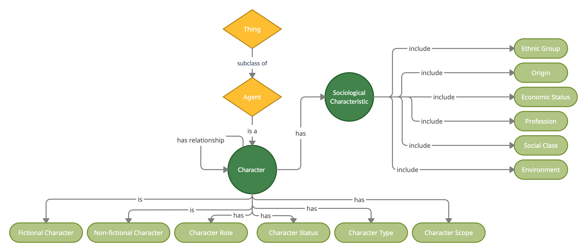

The specific point of reference in our approach to TV series was Breaking Bad, a show by Vince Gilligan that has become famous all over the world for being one of the most innovative series in terms of content and parallel plots. Thanks to these same features, it has been the perfect starting point to model a knowledge graph able to describe the content of any cultural property depicting a plot and some characters.
Analyzing the TV series different features, we found in the classification and description of characters the most interesting and richest field of research.
Competency Questions
In order to develop the new content module - the eighth within ArCo’s network - we adapted to our purposes the so-called method eXtreme Design, the same used for ArCo’s network (link).
Initially, we formulated a great variety of questions in natural language that helped us in identifying the most different aspects of Breaking Bad that seemed worthy of interest to us. A few examples are:
How many non-white characters are employed in illegal occupations?
Which female characters have both an occupation and a child?
Which are the characters that have been killed by other characters?
Who is the protagonist? Who are the fictional characters that are not the protagonist?
We then identified in each of them the logical components necessary to correctly formulating our competency questions, highlighting the events, classes, individuals (named or anonymous ones), relations and logical implications.
In particular, we ended up in defining the ‘Origin’ and ‘Profession’ classes (and their subclasses).
A more exhaustive representation of the steps occurred in this process can be consulted in the dedicated "Documentation" section or here.
Conceptual Model
A major and fundamental step in the construction of our content module was the realization of our conceptual model. the realization of a series of competency question was fundamental for us to highlight and underline the major aspects of interest in our cultural property and, even before formalizing them in the abstraction of a dedicated ontology, we carried on an additional step in the classification of the features we would have needed to deal with. Indeed, in order to understand in depth the relationships and interactions between the different narratological and sociological characteristics of our characters, we developed a conceptual model in natural language so that we could give a clearer visual representation of them and underline their features.
This process went through several steps of redefinition and curation, we were really focused on trying to have concretely the best match for our ideal conceptual model. Following it's presented a close up version of our conceptual model focused on only the major and principal classes; the full versione of it can be consulted in the dedicated "Documentation" section or here.

The Content Module
With all classes, subclasses and properties clearly linked, we were finally ready to translate the concepts expressed in natural language into a formal one. The whole process of building our modular ontology was carried on through the ontology editor and knowledge management system Protégé, through which we handled the task, where it was needed, of the placement on the one hand of some class restrictions in order to better define their application to real entities, and on the other one on property characteristics able to define the type of relationship they represent.
Our ontology counts 60 Classes, 51 Object properties and 12 Data properties, all specifically thought for the modeling of a cultural property content and particularly for the description of the characters. To see some example on how Protegè manage and represent our model costitutive element click here.
Knowledge Graph
Then we realize the LODE visualization of our module, that can be seen here. Following it's presented the knowledge graph resulting from the content module we create.
SPARQL Queries
Consistency checking
Once we built our ontology, we used it to create a dataset populated with named individuals derived from the chosen cultural property. This passage was fundamental in order to check the consistency of the model we had created against its application to real data.
Starting from the competency questions we listed at the beginning of the research, we translated them in a formal language to realize a set of SPARQL queries to be run on the dataset. They are built in different ways and on different difficulty levels, aiming at plumbing some of the relevant aspects present in our model.
Query 1:
How many characters not-white are employed in illegal professions?
How many characters not-white are employed in illegal professions?
SELECT *
WHERE { ?
character rdf:type a-cont:AntiHero ;
a-cont:hasProfession ?Profession ;
a-cont:hasGeographicOrigin ?GeographicOrigin ;
a-cont:hasEthnicOrigin ?EthnicOrigin ;
a-cont:hasEthnicGroup ?EthnicGroup .
} ORDER BY ?character
Result:
character
Profession
GeographicOrigin
EthnicOrigin
EthnicGroup
dataset:Hector_Salamanca
dataset:Drug_dealer
dataset:Mexico
dataset:Latino
dataset:LatinAmerican
dataset:Jesse_Pinkman
dataset:Drug_dealer
dataset:USA
dataset:White
dataset:White
dataset:Jesse_Pinkman
dataset:Meth_manufacturer
dataset:USA
dataset:White
dataset:White
dataset:Mike_Ehrmantraut
dataset:Cleaner
dataset:USA
dataset:White
dataset:White
dataset:Saul_Goodman
dataset:Lawyer
dataset:USA
dataset:White
dataset:White
dataset:Walter_White
dataset:Car_wash_cashier
dataset:USA
dataset:White
dataset:White
dataset:Walter_White
dataset:Chemist
dataset:USA
dataset:White
dataset:White
dataset:Walter_White
dataset:Drug_dealer
dataset:USA
dataset:White
dataset:White
dataset:Walter_White
dataset:High_school_Chemistry_teacher
dataset:USA
dataset:White
dataset:White
dataset:Walter_White
dataset:Meth_manufacturer
dataset:USA
dataset:White
dataset:White
Other sources
Reliability checking
We decided to conduct additional SPARQL queries as similar as possible to ours on much larger and more authoritative databases such as the one consisting of data from the Wikidata Ontology Project dedicated to Breaking Bad and its characters.
We noticed that the point of contact were only partial: it was possible to make comparisons only in case of queries referring to the profession of the characters, their sex or, in some cases, the ethnic group they belong to; the information regarding the narratological role of the characters is almost absent in Wikidata.
We believe that this distance is a symptom of how much research on character descriptions is still at an early stage and, at the same time, worthy of being conducted. For these reasons we think that our module is original and worthy for potential expansion.
Wikidata Query 1:
All Breaking Bad non-American characters who are drug dealers.
All Breaking Bad non-American characters who are drug dealers.
* Adapted query from original query 1 *
SELECT ?item ?itemLabel
WHERE {
?item wdt:P31 wd:Q16888407 .
?item wdt:P106 wd:Q10384029 .
MINUS {
?item wdt:P27 wd:Q30 .
}
SERVICE wikibase:label { bd:serviceParam wikibase:language "[AUTO_LANGUAGE],en". }
}
We imagined our ontology as the eighth module of ArCo’s network, a self-standing, independently working section of the whole project. For this reason, we decided to directly import two other modules:
the denotative-description module: to handle the necessity to link the content to the more general level of description of a cultural property;
the context module: to supply some boundaries with the concepts relating the content with the context.
In addition, we indirectly imported the core module through the two above. The choice of importing each of them was pondered on the possibility to realize equivalences between some of our classes and theirs.
We defined our module as an ArCo’s spin-off because even though we have created an additional module, it is very detached from the whole arco network.